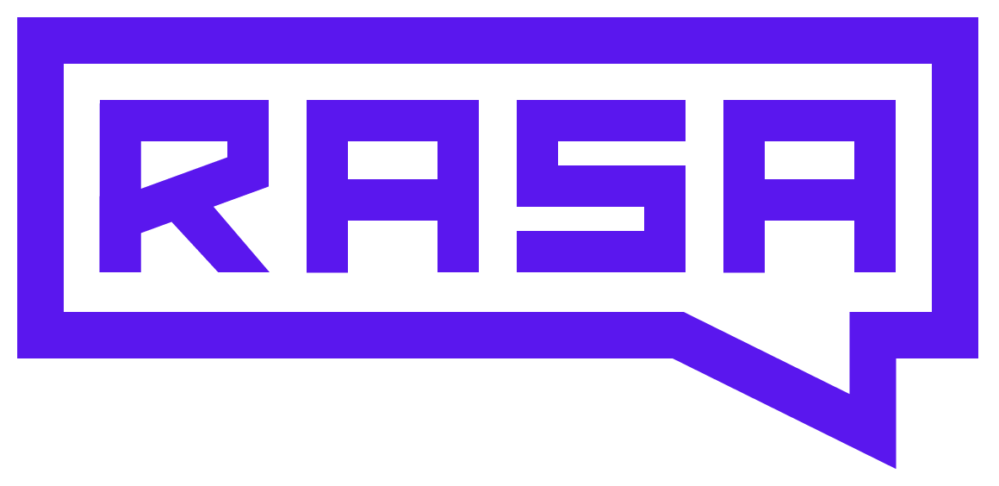
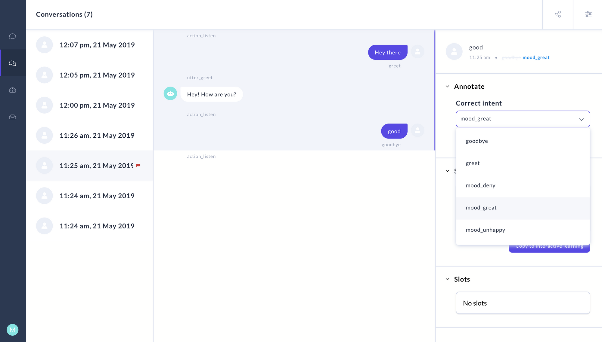
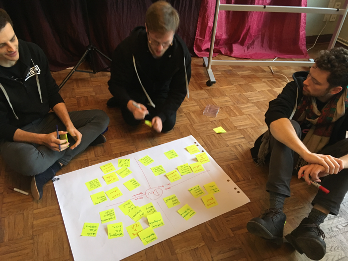
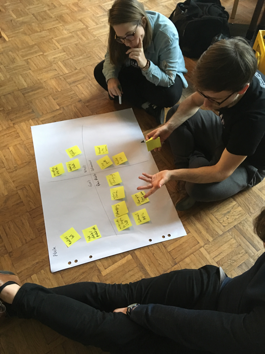
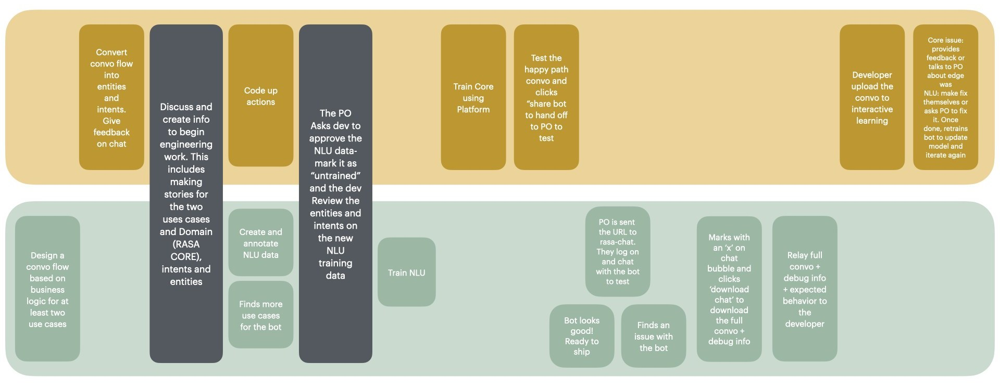
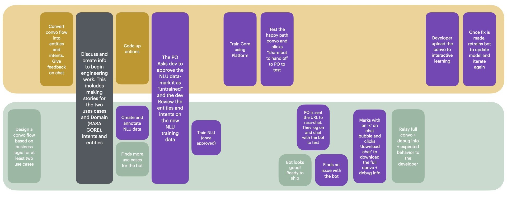
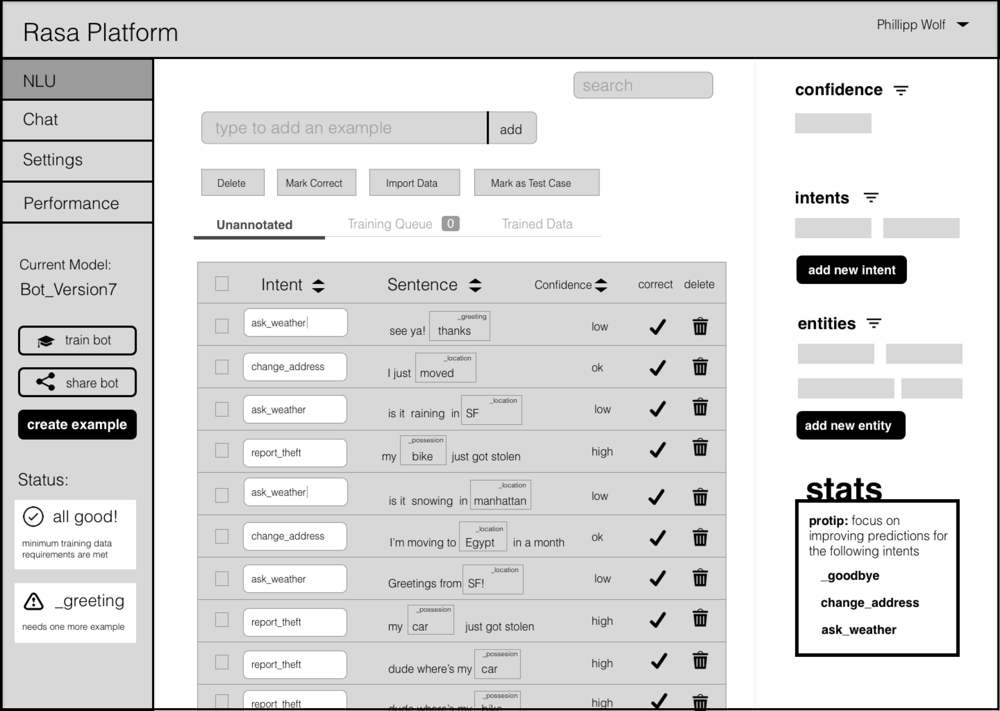
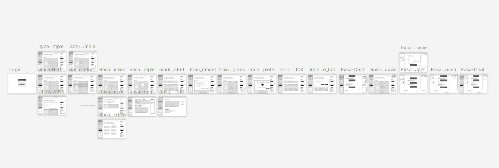
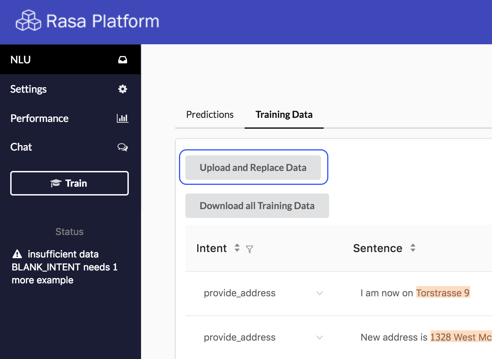

Case Study · Rasa · 2017–2018, Berlin
Letting non-engineers train chatbots
Rasa Platform is an ML-Ops tool for building and training enterprise chatbots, pre-ChatGPT. As the solo front-end engineer, I researched, designed, and shipped the React web app that cut handoff and training time by 40% and helped Rasa pivot from services to a product company.
While enterprise customers (like banking and insurance companies) had solid workflows to build chatbots in Rasa, training and testing models remained highly ambiguous.
Teams frequently hit roadblocks, relying on the Rasa team to build custom solutions so engineers and PMs could collaborate on iterations. Without these, engineers faced heavy overhead: parsing feedback from screenshots, emails and Jira notes.
To share a chatbot with a nontechnical teammate, engineers would even build custom sandbox environments, and sometimes, even teach PMs how to test chatbots using CLI terminals like a developer.

In the spirit of Rasa making the shift from being a professional services company to a product company, I proposed to the CEO and COO that I run a design thinking workshop with the entire startup. I had everyone pull from their experiences building for existing clients.
We divided the existing clients into two personas: engineers and PMs. Each person mapped the behaviors, pain points, and goals of existing customers that build chatbots using Rasa.


- Make debugging training data easier?
- Make annotating data less tedious?
- Show how good the bot really is?
- Smooth dev–PM collaboration?
- Make deploying changes easier?
Solved the handoff bottleneck: developers couldn’t share work-in-progress models efficiently, and PMs couldn’t give actionable feedback. Created a shared submission flow with structured feedback collection that worked for both workflows.




I designed the NLU training queue with confidence scores (so non-engineers knew what to fix), a chat + debug playground, and a share-via-link flow. Built it in React from wireframes to production under deadline.


Impact
Impact & outcomes
What I Learned
What I'd build next
Model performance visibility is crucial to the business. Next step: richer analytics, tracking quality by version, comparing confidence across intents. This work cemented my pivot from engineer to designer.